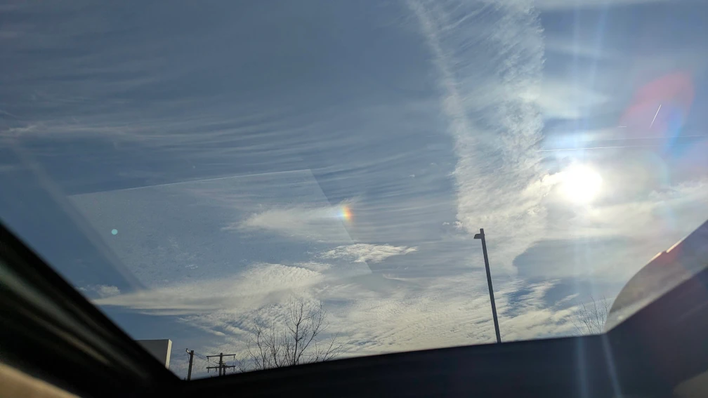

my photo journal
the itty bitty rainbow

This is a photo I took through my sun roof.
Pretty (small) rainbow, right? I took this photo while stopped at a light. I was taking my child to rehearsals. It was a Monday afternoon, just around 4pm, and my other child looked out the window and saw this tiny rainbow. We had never seen a rainbow so small and focused in such a small area of the sky.
A few minutes later, we dropped my oldest off at rehearsals, and then we drove away. By the time we had circled back, the rainbow was gone. My children had learned the word ephemeral recently, and now they had another example to use.
We arrived home about ten minutes later, and the other kids and I pattered around until it was time to return to pick up my oldest. We usually go to a friend's house after rehearsal and have dinner there, but sometimes we don't, and I don't know if we did that evening.
When we do go to my friend's house, often my kids will help cook dinner, but sometimes it's ready when we arrive. Then we eat and play board or card games, or if the weather is good, we go to the park.
- Apples
- Honeycrisp
- Fuji
- Bananas
- Cavendish
- Plaintain
- Watermelon